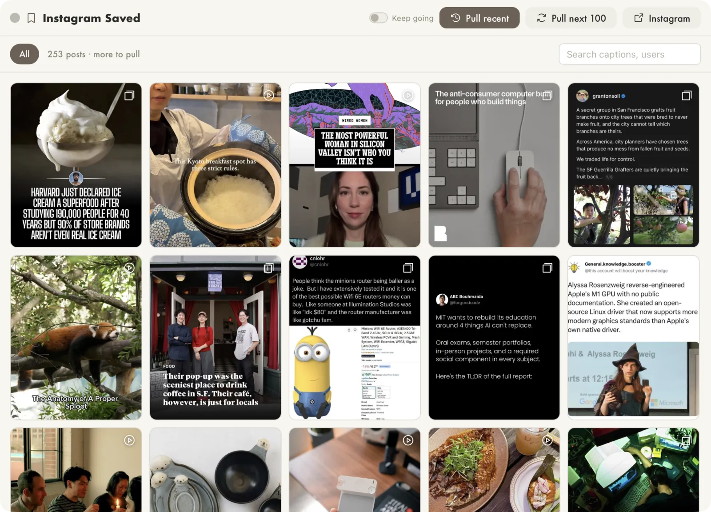

Bookmarks
V.0.1
I save a lot of things on Instagram. I don't organize it at all. It's quite random, but there are good restaurants and art things that I want to find later without getting sucked into scrolling.
This was actually trickier to build than it seems, since Meta doesn't want people to so easily download content from their walls. I'd like to add my LinkedIn bookmarks too, since the UX on that site is just impossible.